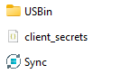

Bienvenido a USBin Sync
USBin Sync es una aplicación diseñada para facilitar la sincronización de archivos entre tu dispositivo USB y Google Drive.
Con USBin Sync, puedes asegurar que todos tus archivos importantes están siempre respaldados y accesibles desde tu
cuenta de google drive.
y lo mejor en caso de que no tengas configuradas las dos partes (USB y tu google Drive) la aplicacion lo hace por vos, por eso
la app solicita permisos al momento de iniciarla.
Instalación
La instalación es sencilla, ya que solo hay que descargar el programa cliqueando en el icono de Sync, en la parte superior de la página.
Al cliquear se comenzará la descarga de un archivo.rar el cuál contiene la aplicación y otros archivos para su funcionamientoi de forma correcta.
Deberá introducir esos archivos en la raíz de su PenDrive, y deben quedar de esta forma:

Funcionamiento
El funcionemiento de la App es sencillo, deberá entrar en su PenDrive una vez ya introducidos los archivos necesarios y hacer doble Click en el elemento
que tiene de nombre de "Sync"
de forma automática se abrirá el navegador y la app le solicitará que inicie sesión en su cuenta, y que acepte los permisos
para el respectivo funcionamiento de la app, ya que sin estos
la app no podría trabajar.
Dentro de la carpeta USBin (La que se sincroniza) usted verá varios archivos, estos son muy importantes para el funcionamiento de forma correcta de la App.
es importante no eliminar ni mover los archivos que vienen de forma predeterminada con la descarga de la app, ya que esta configurado para que la
aplicación los busqué de forma automatica en el lugar donde se ubican.
Los archivos que usted decida sincronizar los deberá arrastrar a la carpeta "USBin", esto con aplicación en ejecución